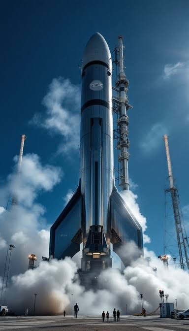
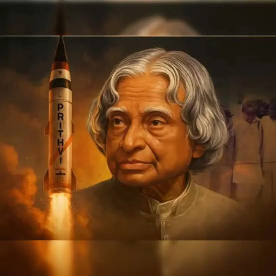
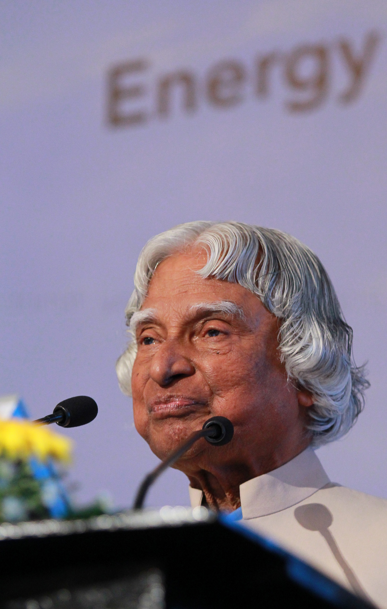
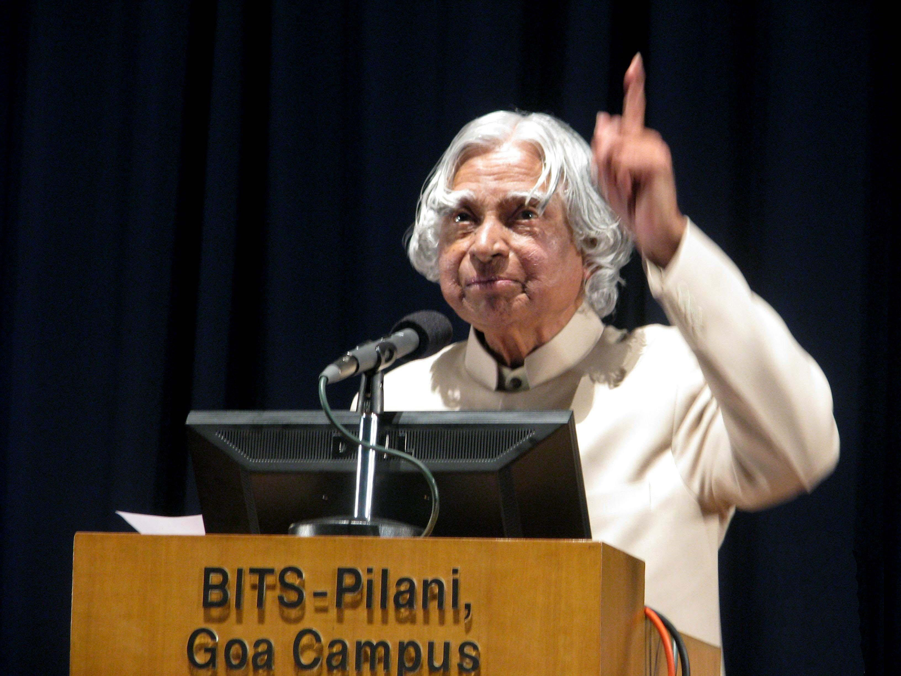

THE MAN BEHIND THE VISION
A Life That Inspired Millions
Dr. A.P.J. Abdul Kalam was an Indian aerospace scientist and the 11th President of India. Born in Rameswaram, Tamil Nadu, he rose from humble beginnings to become one of India's most respected scientists and public figures.
His early life was shaped by discipline, curiosity, and a strong desire to learn. After studying physics and aerospace engineering, Kalam joined India's space programme and contributed to the country's growing scientific and technological capabilities.
Through his work with ISRO and DRDO, he helped advance satellite launch technology and guided missile development. He became widely admired not only for his achievements as a scientist, but also for his humility, dedication, and willingness to encourage young people.
HIS PATH TO GREATNESS
The Journey

1931 – A Humble Beginning
Born on 15 October in Rameswaram, Tamil Nadu.
1960s – Scientific Career
Began contributing to India's aerospace and space programmes.
1980 – SLV-III Success
Led the project that successfully placed the Rohini satellite into orbit.
1990s – National Recognition
Played an important role in India's missile and defence programmes.
2002 – The People's President
Became the 11th President of India.
2015 – An Eternal Inspiration
Passed away on 27 July while delivering a lecture at IIM Shillong.
A LEGACY OF EXCELLENCE
His Achievements
Space Research
Contributed significantly to India's space programme.
Missile Development
Played a key role in developing India's guided missile programme.
Presidency
Served as India's 11th President from 2002 to 2007.
Bharat Ratna
Received India's highest civilian award in 1997.
A LIFE IN PICTURES
Gallery



“Dream, dream, dream. Dreams transform into thoughts and thoughts result in action.” — Dr. A.P.J. Abdul Kalam
BEYOND A LIFETIME
His Legacy Lives On
Dr. Kalam believed in the power of education, innovation, and young minds. His life continues to inspire generations to work hard, dream boldly, and contribute to society.